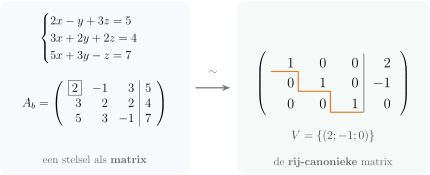

Hoofdstuk 4Stelsels van lineaire vergelijkingen

Leerplandoelstellingen (GO! Navigator)
Gevorderde wiskunde (WD3_06.08)
-
• WD3_06.08.15 (MD 06.08.04) De leerlingen lossen stelsels van eerstegraadsvergelijkingen op met behulp van de methode van Gauss-Jordan.
-
• WD3_06.08.16 De leerlingen bespreken de oplosbaarheid van stelsels van eerstegraadsvergelijkingen.
Didactische uitwerking: de standaardvorm en de matrices van een stelsel, gelijkwaardige stelsels, elementaire rij-operaties, de rij-canonieke matrix en haar rang, de methode van Gauss-Jordan, het verband tussen oplosbaarheid en rang, homogene stelsels, vraagstukken, het bespreken van stelsels met een parameter en de coëxistentievoorwaarde.
I Stelsels van \(m\) lineaire vergelijkingen met \(n\) onbekenden
1 Standaardvorm
\[ \begin {cases} a_{11}x_1+a_{12}x_2+a_{13}x_3+\cdots +a_{1n}x_n=b_1\\ a_{21}x_1+a_{22}x_2+a_{23}x_3+\cdots +a_{2n}x_n=b_2\\ \quad \vdots \\ a_{m1}x_1+a_{m2}x_2+a_{m3}x_3+\cdots +a_{mn}x_n=b_m \end {cases} \]
2 Definities
Uit deze standaardvorm halen we vier matrices.
-
• De \(m\times n\)-matrix gevormd door de coëfficiënten \(a_{ij}\) is de coëfficiëntenmatrix van het stelsel:
\[ A=\begin {pmatrix} a_{11}&a_{12}&\cdots &a_{1n}\\ a_{21}&a_{22}&\cdots &a_{2n}\\ \vdots &\vdots &&\vdots \\ a_{m1}&a_{m2}&\cdots &a_{mn} \end {pmatrix} \]
-
• De \(n\times 1\)-matrix gevormd door de onbekenden \(x_j\) is de kolommatrix van de onbekenden:
\[ X=\begin {pmatrix}x_1\\ x_2\\ \vdots \\ x_n\end {pmatrix} \]
-
• De \(m\times 1\)-matrix gevormd door de constante termen \(b_i\) is de kolommatrix met de bekende termen:
\[ B=\begin {pmatrix}b_1\\ b_2\\ \vdots \\ b_m\end {pmatrix} \]
-
• De \(m\times (n+1)\)-matrix gevormd door de coëfficiënten \(a_{ij}\) en de bekende termen \(b_i\) is de uitgebreide matrix of verhoogde matrix:
\[ A_b=\left (\begin {array}{cccc|c} a_{11}&a_{12}&\cdots &a_{1n}&b_1\\ a_{21}&a_{22}&\cdots &a_{2n}&b_2\\ \vdots &\vdots &&\vdots &\vdots \\ a_{m1}&a_{m2}&\cdots &a_{mn}&b_m \end {array}\right ) \]
Met deze matrices schrijven we het stelsel als één matrixvergelijking:
\[ A\cdot X=B \]
Is \(A\) vierkant en regulier (\(\det A\neq 0\)), dan bestaat \(A^{-1}\) en vinden we
\[ X=A^{-1}\cdot B \]
Die inverse is vaak moeilijk te berekenen, zeker als \(m\) en \(n\) groot worden of als \(A\) parameters bevat. En voor een stelsel dat niet vierkant is, bestaat ze niet.
II Oplossingenverzameling van een stelsel
Een oplossing van een \(m\times n\)-stelsel is elk geordend \(n\)-tal \((t_1;t_2;\ldots ;t_n)\) dat een oplossing is van elke vergelijking van het stelsel. Met andere woorden: \((t_1;t_2;\ldots ;t_n)\) voldoet aan elke vergelijking van het stelsel.
\[ (t_1;t_2;\ldots ;t_n)\text { is een oplossing van }S \iff \begin {cases} a_{11}t_1+a_{12}t_2+\cdots +a_{1n}t_n=b_1\\ a_{21}t_1+a_{22}t_2+\cdots +a_{2n}t_n=b_2\\ \quad \vdots \\ a_{m1}t_1+a_{m2}t_2+\cdots +a_{mn}t_n=b_m \end {cases} \]
Alle oplossingen samen vormen de oplossingenverzameling \(V\).
1 Voorbeeld
We lossen op met de combinatiemethode. Naast het stelsel staan de factoren waarmee we de vergelijkingen vermenigvuldigen.
\[ \begin {cases}x+y=7\\ 3x-y=1\end {cases} \left .\begin {array}{r}1\\ 1\end {array}\right | \begin {array}{r}3\\ -1\end {array} \iff \begin {cases}4x=8\\ 4y=20\end {cases} \iff \begin {cases}x=2\\ y=5\end {cases} \qquad V=\{(2;5)\} \]
De uitgebreide matrix van dit stelsel is
\[ A_b=\left (\begin {array}{rr|r}1&1&7\\ 3&-1&1\end {array}\right ) \]
III Gelijkwaardige stelsels
De oplossingenverzameling van een stelsel verandert niet als we
-
• twee vergelijkingen van plaats verwisselen;
-
• beide leden van een vergelijking met eenzelfde getal \(k\neq 0\) vermenigvuldigen;
-
• bij een vergelijking een veelvoud van een andere vergelijking optellen.
1 Definitie
Twee stelsels \(S\) en \(S'\) noemen we gelijkwaardige stelsels als hun oplossingenverzamelingen gelijk zijn. We noteren \(S\iff S'\).
2 Eigenschappen
Het stelsel \(S'\) dat we uit het stelsel \(S\) bekomen door
-
1. twee vergelijkingen om te wisselen,
-
2. een vergelijking met een getal \(k\neq 0\) te vermenigvuldigen,
-
3. een veelvoud van een vergelijking bij een andere vergelijking op te tellen,
-
4. \(l\) keer een vergelijking op te tellen bij \(k\) keer een andere vergelijking (\(k\neq 0\)),
is gelijkwaardig met \(S\).
Eigenschap 4 is eigenschap 2 gevolgd door eigenschap 3. Het is precies wat de combinatiemethode doet.
IV Elementaire rij-operaties op een matrix
Vertalen we die eigenschappen naar bewerkingen op de uitgebreide matrix van het stelsel, dan blijft de oplossingenverzameling van het overeenkomstige stelsel behouden. We noemen deze bewerkingen elementaire rij-operaties.
-
1. Twee rijen met elkaar verwisselen: \(R_i\leftrightarrow R_j\).
-
2. Een rij vermenigvuldigen met \(k\in \R _0\): \(R_i\to k\,R_i\).
-
3. Bij een rij een veelvoud van een andere rij optellen: \(R_i\to R_i+l\,R_j\).
-
4. Bij het \(k\)-voud van een rij het \(l\)-voud van een andere rij optellen (\(k\neq 0\)): \(R_i\to k\,R_i+l\,R_j\).
Kan een matrix \(A\) uit een matrix \(B\) bekomen worden door een eindig aantal elementaire rij-operaties toe te passen, dan noemen we de twee matrices rij-equivalent. We noteren \(A\sim B\).
1 Voorbeeld van rij-equivalente matrices
\(\seteqnumber{0}{}{0}\)\begin{align*} A &= \left (\begin{array}{rrr}1&2&3\\ 4&5&6\\ 7&8&9\end {array}\right )\controle {6\\ 15\\ 24} \sim \rijop {\op {R_1\leftrightarrow R_3}\\ \\ }\left (\begin{array}{rrr}7&8&9\\ 4&5&6\\ 1&2&3\end {array}\right )\controle {24\\ 15\\ 6}\\ &\sim \rijop {\\ \op {R_2\to 2R_2}\\ }\left (\begin{array}{rrr}7&8&9\\ 8&10&12\\ 1&2&3\end {array}\right )\controle {24\\ 30\\ 6} \sim \rijop {\op {R_1\to R_1-3R_3}\\ \\ }\left (\begin{array}{rrr}4&2&0\\ 8&10&12\\ 1&2&3\end {array}\right )\controle {6\\ 30\\ 6} \end{align*}
2 Opmerking: controlekolom
Om rekenfouten te vermijden, voegen we een controlekolom toe aan de matrix: de grijze getallen in het voorbeeld. Per rij tellen we de elementen op; dat zijn de controlegetallen. Op die controlegetallen voeren we dezelfde elementaire rij-operaties uit. Na elke stap moet elk controlegetal weer de som van zijn rij zijn.
3 Elementaire rij-operaties op een determinant
Wat doen de rij-operaties met de determinant van een vierkante matrix? Zie de eigenschappen van determinanten in het vorige hoofdstuk.
-
• Operatie 1: de determinant verandert van teken.
-
• Operatie 2: de determinant wordt vermenigvuldigd met \(k\).
-
• Operatie 3: de determinant blijft gelijk.
-
• Operatie 4: de determinant wordt vermenigvuldigd met \(k\).
Of een determinant nul is of niet, verandert dus niet. Daarom geldt ook: elementaire rij-operaties bewaren de rang van een matrix.
Dat laatste volgt niet helemaal vanzelf. Een minor bevat niet altijd alle rijen die in een operatie meedoen. Bij \(R_i\to R_i+l\,R_j\) met \(R_i\) wel en \(R_j\) niet in de minor, wordt de minor een som van twee minoren. Toch blijft de rang gelijk; het volledige bewijs laten we hier achterwege.
V Rij-canonieke matrix
1 Algemene voorstelling
\[ \begin {pmatrix} 1&0&a&0&c\\ 0&1&b&0&d\\ 0&0&0&1&e\\ 0&0&0&0&0 \end {pmatrix} \]
2 Eigenschappen
-
1. Komen er nulrijen in de matrix voor, dan staan ze onderaan.
-
2. In een rij die geen nulrij is, is het hoofdelement altijd \(1\). Het hoofdelement of de spil is het eerste element van de rij dat niet nul is.
-
3. Boven en onder een hoofdelement staan enkel nullen.
-
4. Elke rij, vanaf de tweede, begint met meer nullen dan de vorige. De hoofdelementen staan dus in trapvorm, de echelonvorm.
3 Stelling
De rang van een rij-canonieke matrix is het aantal rijen dat geen nulrij is.
Bewijs.
Schrap uit de matrix de nulrijen en de kolommen die geen spil bevatten. Wat overblijft, is een eenheidsmatrix met evenveel rijen en kolommen als er niet-nulrijen zijn. Die minor is niet nul, want \(\det I=1\). Een minor van hogere orde bevat minstens één nulrij en is dus nul.
Met het GRM
Een matrix herleiden tot de rij-canonieke matrix: voer de matrix in als [A] via 2ndmatrixx⁻¹ EDIT. Kies daarna 2ndmatrixx⁻¹ MATH B:rref( en typ rref([A]). De naam rref staat voor row reduced echelon form.
VI Stelsels oplossen met de methode van Gauss-Jordan
1 Voorbeeld 1
Los op in \(\R ^3\):
\[ \begin {cases}2x-y+3z=5\\ 3x+2y+2z=4\\ 5x+3y-z=7\end {cases} \]
In het kadertje staat telkens de spil: met haar maken we de andere elementen van haar kolom nul. De methode steunt op de combinatiemethode: zo vermijden we breuken.
Nullen maken in \(K_1\)
\(\seteqnumber{0}{}{0}\)\begin{align*} A_b &= \left (\begin{array}{rrr|r}\spil {2}&-1&3&5\\ 3&2&2&4\\ 5&3&-1&7\end {array}\right ) \sim \rijop {\\ \op {R_2\to 2R_2-3R_1}\vphantom {\spil {0}}\\ \op {R_3\to 2R_3-5R_1}}\left (\begin{array}{rrr|r}2&-1&3&5\\ 0&\spil {7}&-5&-7\\ 0&11&-17&-11\end {array}\right ) \end{align*}
Nullen maken in \(K_2\)
\[ \sim \rijop {\op {R_1\to 7R_1+R_2}\\ \\ \op {R_3\to 7R_3-11R_2}\vphantom {\spil {0}}}\left (\begin {array}{rrr|r}14&0&16&28\\ 0&7&-5&-7\\ 0&0&\spil {-64}&0\end {array}\right ) \sim \rijop {\\ \\ \op {R_3/(-64)}\vphantom {\spil {0}}}\left (\begin {array}{rrr|r}14&0&16&28\\ 0&7&-5&-7\\ 0&0&\spil {1}&0\end {array}\right ) \]
Nullen maken in \(K_3\)
\[ \sim \rijop {\op {R_1\to R_1-16R_3}\\ \op {R_2\to R_2+5R_3}\\ }\left (\begin {array}{rrr|r}14&0&0&28\\ 0&7&0&-7\\ 0&0&1&0\end {array}\right ) \]
Spillen \(1\) maken
\[ \sim \rijop {\op {R_1/14}\\ \op {R_2/7}\\ }\left (\begin {array}{rrr|r}1&0&0&2\\ 0&1&0&-1\\ 0&0&1&0\end {array}\right ) \]
\[ \Rightarrow \begin {cases}x=2\\ y=-1\\ z=0\end {cases} \qquad V=\{(2;-1;0)\} \]
Opmerking: \(r(A_b)=r(A)=3=n\).
2 Voorbeeld 2
Los op in \(\R ^3\):
\[ \begin {cases}2x+4y-z=-7\\ 3x+6y+2z=0\\ -2x+2y-3z=-17\\ 4x-3y+4z=26\end {cases} \]
\(\seteqnumber{0}{}{0}\)\begin{align*} A_b &= \left (\begin{array}{rrr|r}2&4&-1&-7\\ 3&6&2&0\\ -2&2&-3&-17\\ 4&-3&4&26\end {array}\right )\controle {-2\\ 11\\ -20\\ 31} \sim \rijop {\\ \op {R_2\to 2R_2-3R_1}\\ \op {R_3\to 2R_3+2R_1}\\ \op {R_4\to 2R_4-4R_1}}\left (\begin{array}{rrr|r}2&4&-1&-7\\ 0&0&7&21\\ 0&12&-8&-48\\ 0&-22&12&80\end {array}\right )\controle {-2\\ 28\\ -44\\ 70}\\ &\sim \rijop {\\ \op {R_2\to R_3/4}\\ \op {R_3\to R_2/7}\\ \op {R_4/2}}\left (\begin{array}{rrr|r}2&4&-1&-7\\ 0&3&-2&-12\\ 0&0&1&3\\ 0&-11&6&40\end {array}\right )\controle {-2\\ -11\\ 4\\ 35} \sim \rijop {\op {R_1\to 3R_1-4R_2}\\ \\ \\ \op {R_4\to 3R_4+11R_2}}\left (\begin{array}{rrr|r}6&0&5&27\\ 0&3&-2&-12\\ 0&0&1&3\\ 0&0&-4&-12\end {array}\right )\controle {38\\ -11\\ 4\\ -16}\\ &\sim \rijop {\op {R_1\to R_1-5R_3}\\ \op {R_2\to R_2+2R_3}\\ \\ \op {R_4\to R_4+4R_3}}\left (\begin{array}{rrr|r}6&0&0&12\\ 0&3&0&-6\\ 0&0&1&3\\ 0&0&0&0\end {array}\right )\controle {18\\ -3\\ 4\\ 0} \sim \rijop {\op {R_1/6}\\ \op {R_2/3}\\ \\ }\left (\begin{array}{rrr|r}1&0&0&2\\ 0&1&0&-2\\ 0&0&1&3\\ 0&0&0&0\end {array}\right )\controle {3\\ -1\\ 4\\ 0} \end{align*}
\[ \Rightarrow \begin {cases}x=2\\ y=-2\\ z=3\end {cases} \qquad V=\{(2;-2;3)\} \]
Opmerking: \(r(A_b)=3=r(A)=n\).
3 Voorbeeld 3
Los op in \(\R ^3\):
\[ \begin {cases}3x-7y+2z=2\\ -x+3y=-2\\ x-2y+z=0\end {cases} \]
\(\seteqnumber{0}{}{0}\)\begin{align*} A_b &= \left (\begin{array}{rrr|r}3&-7&2&2\\ -1&3&0&-2\\ 1&-2&1&0\end {array}\right )\controle {0\\ 0\\ 0} \sim \rijop {\\ \op {R_2\to 3R_2+R_1}\\ \op {R_3\to 3R_3-R_1}}\left (\begin{array}{rrr|r}3&-7&2&2\\ 0&2&2&-4\\ 0&1&1&-2\end {array}\right )\controle {0\\ 0\\ 0}\\ &\sim \rijop {\op {R_1\to 2R_1+7R_2}\\ \\ \op {R_3\to 2R_3-R_2}}\left (\begin{array}{rrr|r}6&0&18&-24\\ 0&2&2&-4\\ 0&0&0&0\end {array}\right )\controle {0\\ 0\\ 0} \sim \rijop {\op {R_1/6}\\ \op {R_2/2}\\ }\left (\begin{array}{rrr|r}1&0&3&-4\\ 0&1&1&-2\\ 0&0&0&0\end {array}\right )\controle {0\\ 0\\ 0} \end{align*}
\[ \Rightarrow \begin {cases}x+3z=-4\\ y+z=-2\\ 0z=0\end {cases} \iff \begin {cases}x=-4-3t\\ y=-2-t\\ z=t\in \R \end {cases} \]
\[ V=\{(-4-3t;-2-t;t)\mid t\in \R \} \]
Opmerking: \(r(A_b)=r(A)=2<n=3\), dus we kiezen \(1\) onbekende vrij.
4 Voorbeeld 4
Los op in \(\R ^3\):
\[ \begin {cases}x-3y-z=2\\ -2x+5y+3z=4\\ 4x-11y-5z=5\end {cases} \]
\(\seteqnumber{0}{}{0}\)\begin{align*} A_b &= \left (\begin{array}{rrr|r}1&-3&-1&2\\ -2&5&3&4\\ 4&-11&-5&5\end {array}\right )\controle {-1\\ 10\\ -7} \sim \rijop {\\ \op {R_2\to R_2+2R_1}\\ \op {R_3\to R_3-4R_1}}\left (\begin{array}{rrr|r}1&-3&-1&2\\ 0&-1&1&8\\ 0&1&-1&-3\end {array}\right )\controle {-1\\ 8\\ -3}\\ &\sim \rijop {\op {R_1\to -R_1+3R_2}\\ \\ \op {R_3\to R_3+R_2}}\left (\begin{array}{rrr|r}-1&0&4&22\\ 0&-1&1&8\\ 0&0&0&5\end {array}\right )\controle {25\\ 8\\ 5} \sim \rijop {\op {R_1\to -R_1}\\ \op {R_2\to -R_2}\\ \op {R_3/5}}\left (\begin{array}{rrr|r}1&0&-4&-22\\ 0&1&-1&-8\\ 0&0&0&1\end {array}\right )\controle {-25\\ -8\\ 1}\\ &\sim \rijop {\op {R_1\to R_1+22R_3}\\ \op {R_2\to R_2+8R_3}\\ }\left (\begin{array}{rrr|r}1&0&-4&0\\ 0&1&-1&0\\ 0&0&0&1\end {array}\right )\controle {-3\\ 0\\ 1} \end{align*}
\[ \Rightarrow \begin {cases}x-4z=0\\ y-z=0\\ 0z=1\quad \lightning \end {cases} \]
Dit is een strijdig stelsel: \(V=\emptyset \).
Opmerking: \(r(A_b)=3>r(A)=2\), met \(n=3\).
5 Methode van Gauss-Jordan
We herleiden de uitgebreide matrix \(A_b\) van het stelsel tot de rij-canonieke matrix, uitsluitend met elementaire rij-operaties. Dat is de methode van Gauss-Jordan of de spilmethode.
Praktisch:
-
1. Zorg ervoor dat het eerste element van de eerste rij niet nul is: dat is de spil. Wissel daarvoor eventueel de eerste rij met een rij eronder.
-
2. Maak de elementen onder de spil nul met elementaire rij-operaties. Bekom je zo een nulrij, dan mag die onderaan.
-
3. Daal een rij en herhaal de stappen 1 en 2: \(a_{22}\) wordt de spil, en de elementen eronder en erboven worden nul.
-
4. Herhaal dit tot er geen spil meer te vinden is.
-
5. Zorg tot slot dat alle spillen \(1\) worden.
6 Verband tussen oplosbaarheid, rang en uitgebreide matrix
Voor een stelsel met \(n\) onbekenden geldt:
-
• Eigenschap 1: \(r(A_b)>r(A)\iff V=\emptyset \).
-
• Eigenschap 2: \(r(A_b)=r(A)=n\iff \) het stelsel heeft juist één oplossing.
-
• Eigenschap 3: \(r(A_b)=r(A)<n\iff \) het stelsel heeft oneindig veel oplossingen. We kiezen dan \(n-r(A)\) onbekenden vrij!
Besluit
\[ \boxed {\;\text {Een stelsel is oplosbaar}\iff r(A_b)=r(A)\;} \]
7 Oefeningen
Handboek p 133 nr 1.
Oefening 1
Los op in \(\R ^3\) met de methode van Gauss-Jordan.
-
(a) \(\begin {cases}x+2y-z=-4\\ 2x+3y+z=3\\ 5x-y+3z=1\end {cases}\)
\(V=\{(-2;1;4)\}\)
\(\seteqnumber{0}{}{0}\)\begin{align*} A_b &= \left (\begin{array}{rrr|r}1&2&-1&-4\\ 2&3&1&3\\ 5&-1&3&1\end {array}\right ) \sim \rijop {\\ \op {R_2\to R_2-2R_1}\\ \op {R_3\to R_3-5R_1}}\left (\begin{array}{rrr|r}1&2&-1&-4\\ 0&-1&3&11\\ 0&-11&8&21\end {array}\right )\\ &\sim \rijop {\op {R_1\to R_1+2R_2}\\ \\ \op {R_3\to R_3-11R_2}}\left (\begin{array}{rrr|r}1&0&5&18\\ 0&-1&3&11\\ 0&0&-25&-100\end {array}\right ) \sim \rijop {\\ \\ \op {R_3/25}}\left (\begin{array}{rrr|r}1&0&5&18\\ 0&-1&3&11\\ 0&0&-1&-4\end {array}\right )\\ &\sim \rijop {\op {R_1\to R_1+5R_3}\\ \op {R_2\to R_2+3R_3}\\ }\left (\begin{array}{rrr|r}1&0&0&-2\\ 0&-1&0&-1\\ 0&0&-1&-4\end {array}\right ) \sim \rijop {\\ \op {R_2\to -R_2}\\ \op {R_3\to -R_3}}\left (\begin{array}{rrr|r}1&0&0&-2\\ 0&1&0&1\\ 0&0&1&4\end {array}\right ) \end{align*}
\[V=\{(-2;1;4)\}\]
-
(b) \(\begin {cases}2x+3y+5z=9\\ x+2y+3z=4\\ x+z=5\end {cases}\)
\(V=\emptyset \)
\(\seteqnumber{0}{}{0}\)\begin{align*} A_b &= \left (\begin{array}{rrr|r}2&3&5&9\\ 1&2&3&4\\ 1&0&1&5\end {array}\right ) \sim \rijop {\\ \op {R_2\to 2R_2-R_1}\\ \op {R_3\to 2R_3-R_1}}\left (\begin{array}{rrr|r}2&3&5&9\\ 0&1&1&-1\\ 0&-3&-3&1\end {array}\right )\\ &\sim \rijop {\op {R_1\to R_1-3R_2}\\ \\ \op {R_3\to R_3+3R_2}}\left (\begin{array}{rrr|r}2&0&2&12\\ 0&1&1&-1\\ 0&0&0&-2\end {array}\right ) \end{align*} De laatste rij geeft \(0z=-2\ \lightning \). Het stelsel is strijdig:
\[V=\emptyset \]
-
(c) \(\begin {cases}x-y+2z=-1\\ 4x-3y+5z=18\\ -x+y+4z=-5\end {cases}\)
\(V=\{(20;19;-1)\}\)
\(\seteqnumber{0}{}{0}\)\begin{align*} A_b &= \left (\begin{array}{rrr|r}1&-1&2&-1\\ 4&-3&5&18\\ -1&1&4&-5\end {array}\right ) \sim \rijop {\\ \op {R_2\to R_2-4R_1}\\ \op {R_3\to R_3+R_1}}\left (\begin{array}{rrr|r}1&-1&2&-1\\ 0&1&-3&22\\ 0&0&6&-6\end {array}\right )\\ &\sim \rijop {\\ \\ \op {R_3/6}}\left (\begin{array}{rrr|r}1&-1&2&-1\\ 0&1&-3&22\\ 0&0&1&-1\end {array}\right ) \sim \rijop {\op {R_1\to R_1+R_2}\\ \\ }\left (\begin{array}{rrr|r}1&0&-1&21\\ 0&1&-3&22\\ 0&0&1&-1\end {array}\right )\\ &\sim \rijop {\op {R_1\to R_1+R_3}\\ \op {R_2\to R_2+3R_3}\\ }\left (\begin{array}{rrr|r}1&0&0&20\\ 0&1&0&19\\ 0&0&1&-1\end {array}\right ) \end{align*}
\[V=\{(20;19;-1)\}\]
-
(d) \(\begin {cases}-3x-7y+6z=6\\ x+3y-2z=0\\ 2x+y+4z=25\end {cases}\)
\(V=\{(1;3;5)\}\)
\(\seteqnumber{0}{}{0}\)\begin{align*} A_b &= \left (\begin{array}{rrr|r}-3&-7&6&6\\ 1&3&-2&0\\ 2&1&4&25\end {array}\right ) \sim \rijop {\\ \op {R_2\to 3R_2+R_1}\\ \op {R_3\to 3R_3+2R_1}}\left (\begin{array}{rrr|r}-3&-7&6&6\\ 0&2&0&6\\ 0&-11&24&87\end {array}\right )\\ &\sim \rijop {\\ \op {R_2/2}\\ }\left (\begin{array}{rrr|r}-3&-7&6&6\\ 0&1&0&3\\ 0&-11&24&87\end {array}\right ) \sim \rijop {\op {R_1\to R_1+7R_2}\\ \\ \op {R_3\to R_3+11R_2}}\left (\begin{array}{rrr|r}-3&0&6&27\\ 0&1&0&3\\ 0&0&24&120\end {array}\right )\\ &\sim \rijop {\op {R_1/3}\\ \\ \op {R_3/24}}\left (\begin{array}{rrr|r}-1&0&2&9\\ 0&1&0&3\\ 0&0&1&5\end {array}\right ) \sim \rijop {\op {R_1\to R_1-2R_3}\\ \\ }\left (\begin{array}{rrr|r}-1&0&0&-1\\ 0&1&0&3\\ 0&0&1&5\end {array}\right )\\ &\sim \rijop {\op {R_1\to -R_1}\\ \\ }\left (\begin{array}{rrr|r}1&0&0&1\\ 0&1&0&3\\ 0&0&1&5\end {array}\right ) \end{align*}
\[V=\{(1;3;5)\}\]
-
(e) \(\begin {cases}2x+y-2z=-2\\ 3x+2y-z=4\\ x+y+z=6\end {cases}\)
\(V=\{(-8+3t;14-4t;t)\mid t\in \R \}\)
\(\seteqnumber{0}{}{0}\)\begin{align*} A_b &= \left (\begin{array}{rrr|r}2&1&-2&-2\\ 3&2&-1&4\\ 1&1&1&6\end {array}\right ) \sim \rijop {\\ \op {R_2\to 2R_2-3R_1}\\ \op {R_3\to 2R_3-R_1}}\left (\begin{array}{rrr|r}2&1&-2&-2\\ 0&1&4&14\\ 0&1&4&14\end {array}\right )\\ &\sim \rijop {\op {R_1\to R_1-R_2}\\ \\ \op {R_3\to R_3-R_2}}\left (\begin{array}{rrr|r}2&0&-6&-16\\ 0&1&4&14\\ 0&0&0&0\end {array}\right ) \sim \rijop {\op {R_1/2}\\ \\ }\left (\begin{array}{rrr|r}1&0&-3&-8\\ 0&1&4&14\\ 0&0&0&0\end {array}\right ) \end{align*}
\[ \begin {cases}x-3z=-8\\ y+4z=14\\ 0z=0\end {cases} \iff \begin {cases}x=-8+3t\\ y=14-4t\\ z=t\in \R \end {cases} \qquad V=\{(-8+3t;14-4t;t)\mid t\in \R \} \]
-
(f) \(\begin {cases}3x+2y+4z=-4\\ x+y+z=1\\ 5x-4y+3z=-3\end {cases}\)
\(V=\{(4;2;-5)\}\)
\(\seteqnumber{0}{}{0}\)\begin{align*} A_b &= \left (\begin{array}{rrr|r}3&2&4&-4\\ 1&1&1&1\\ 5&-4&3&-3\end {array}\right ) \sim \rijop {\\ \op {R_2\to 3R_2-R_1}\\ \op {R_3\to 3R_3-5R_1}}\left (\begin{array}{rrr|r}3&2&4&-4\\ 0&1&-1&7\\ 0&-22&-11&11\end {array}\right )\\ &\sim \rijop {\\ \\ \op {R_3/11}}\left (\begin{array}{rrr|r}3&2&4&-4\\ 0&1&-1&7\\ 0&-2&-1&1\end {array}\right ) \sim \rijop {\op {R_1\to R_1-2R_2}\\ \\ \op {R_3\to R_3+2R_2}}\left (\begin{array}{rrr|r}3&0&6&-18\\ 0&1&-1&7\\ 0&0&-3&15\end {array}\right )\\ &\sim \rijop {\op {R_1/3}\\ \\ \op {R_3/3}}\left (\begin{array}{rrr|r}1&0&2&-6\\ 0&1&-1&7\\ 0&0&-1&5\end {array}\right ) \sim \rijop {\op {R_1\to R_1+2R_3}\\ \op {R_2\to R_2-R_3}\\ }\left (\begin{array}{rrr|r}1&0&0&4\\ 0&1&0&2\\ 0&0&-1&5\end {array}\right )\\ &\sim \rijop {\\ \\ \op {R_3\to -R_3}}\left (\begin{array}{rrr|r}1&0&0&4\\ 0&1&0&2\\ 0&0&1&-5\end {array}\right ) \end{align*}
\[V=\{(4;2;-5)\}\]
-
(g) \(\begin {cases}x+3y+10z=31\\ x+4y+12z=39\\ x+y+6z=14\end {cases}\)
\(V=\emptyset \)
\(\seteqnumber{0}{}{0}\)\begin{align*} A_b &= \left (\begin{array}{rrr|r}1&3&10&31\\ 1&4&12&39\\ 1&1&6&14\end {array}\right ) \sim \rijop {\\ \op {R_2\to R_2-R_1}\\ \op {R_3\to R_3-R_1}}\left (\begin{array}{rrr|r}1&3&10&31\\ 0&1&2&8\\ 0&-2&-4&-17\end {array}\right )\\ &\sim \rijop {\op {R_1\to R_1-3R_2}\\ \\ \op {R_3\to R_3+2R_2}}\left (\begin{array}{rrr|r}1&0&4&7\\ 0&1&2&8\\ 0&0&0&-1\end {array}\right ) \end{align*} De laatste rij geeft \(0z=-1\ \lightning \). Het stelsel is strijdig:
\[V=\emptyset \]
-
(h) \(\begin {cases}2x-y-5z=-20\\ x+y-z=-4\\ 6x+5y-2z=2\end {cases}\)
\(V=\{(4;-2;6)\}\)
\(\seteqnumber{0}{}{0}\)\begin{align*} A_b &= \left (\begin{array}{rrr|r}2&-1&-5&-20\\ 1&1&-1&-4\\ 6&5&-2&2\end {array}\right ) \sim \rijop {\\ \op {R_2\to 2R_2-R_1}\\ \op {R_3\to R_3-3R_1}}\left (\begin{array}{rrr|r}2&-1&-5&-20\\ 0&3&3&12\\ 0&8&13&62\end {array}\right )\\ &\sim \rijop {\\ \op {R_2/3}\\ }\left (\begin{array}{rrr|r}2&-1&-5&-20\\ 0&1&1&4\\ 0&8&13&62\end {array}\right ) \sim \rijop {\op {R_1\to R_1+R_2}\\ \\ \op {R_3\to R_3-8R_2}}\left (\begin{array}{rrr|r}2&0&-4&-16\\ 0&1&1&4\\ 0&0&5&30\end {array}\right )\\ &\sim \rijop {\op {R_1/2}\\ \\ \op {R_3/5}}\left (\begin{array}{rrr|r}1&0&-2&-8\\ 0&1&1&4\\ 0&0&1&6\end {array}\right ) \sim \rijop {\op {R_1\to R_1+2R_3}\\ \op {R_2\to R_2-R_3}\\ }\left (\begin{array}{rrr|r}1&0&0&4\\ 0&1&0&-2\\ 0&0&1&6\end {array}\right ) \end{align*}
\[V=\{(4;-2;6)\}\]
-
(i) \(\begin {cases}x+y-2z=-4\\ 2x+y-5z=9\\ -x+y+4z=-30\\ x-2y-3z=47\end {cases}\)
\(V=\{(13;-17;0)\}\)
\(\seteqnumber{0}{}{0}\)\begin{align*} A_b &= \left (\begin{array}{rrr|r}1&1&-2&-4\\ 2&1&-5&9\\ -1&1&4&-30\\ 1&-2&-3&47\end {array}\right ) \sim \rijop {\\ \op {R_2\to R_2-2R_1}\\ \op {R_3\to R_3+R_1}\\ \op {R_4\to R_4-R_1}}\left (\begin{array}{rrr|r}1&1&-2&-4\\ 0&-1&-1&17\\ 0&2&2&-34\\ 0&-3&-1&51\end {array}\right )\\ &\sim \rijop {\\ \\ \op {R_3/2}\\ }\left (\begin{array}{rrr|r}1&1&-2&-4\\ 0&-1&-1&17\\ 0&1&1&-17\\ 0&-3&-1&51\end {array}\right ) \sim \rijop {\op {R_1\to R_1+R_2}\\ \\ \op {R_3\to R_3+R_2}\\ \op {R_4\to R_4-3R_2}}\left (\begin{array}{rrr|r}1&0&-3&13\\ 0&-1&-1&17\\ 0&0&0&0\\ 0&0&2&0\end {array}\right )\\ &\sim \rijop {\\ \\ \\ \op {R_4/2}}\left (\begin{array}{rrr|r}1&0&-3&13\\ 0&-1&-1&17\\ 0&0&0&0\\ 0&0&1&0\end {array}\right ) \sim \rijop {\\ \\ \op {R_3\leftrightarrow R_4}\\ }\left (\begin{array}{rrr|r}1&0&-3&13\\ 0&-1&-1&17\\ 0&0&1&0\\ 0&0&0&0\end {array}\right )\\ &\sim \rijop {\op {R_1\to R_1+3R_3}\\ \op {R_2\to R_2+R_3}\\ \\ }\left (\begin{array}{rrr|r}1&0&0&13\\ 0&-1&0&17\\ 0&0&1&0\\ 0&0&0&0\end {array}\right ) \sim \rijop {\\ \op {R_2\to -R_2}\\ \\ }\left (\begin{array}{rrr|r}1&0&0&13\\ 0&1&0&-17\\ 0&0&1&0\\ 0&0&0&0\end {array}\right ) \end{align*}
\[V=\{(13;-17;0)\}\]
-
(j) \(\begin {cases}x-y-z=1\\ x-3y+7z=11\\ 3x+2y-z=0\end {cases}\)
\(V=\{(1;-1;1)\}\)
\(\seteqnumber{0}{}{0}\)\begin{align*} A_b &= \left (\begin{array}{rrr|r}1&-1&-1&1\\ 1&-3&7&11\\ 3&2&-1&0\end {array}\right ) \sim \rijop {\\ \op {R_2\to R_2-R_1}\\ \op {R_3\to R_3-3R_1}}\left (\begin{array}{rrr|r}1&-1&-1&1\\ 0&-2&8&10\\ 0&5&2&-3\end {array}\right )\\ &\sim \rijop {\\ \op {R_2/2}\\ }\left (\begin{array}{rrr|r}1&-1&-1&1\\ 0&-1&4&5\\ 0&5&2&-3\end {array}\right ) \sim \rijop {\op {R_1\to R_1-R_2}\\ \\ \op {R_3\to R_3+5R_2}}\left (\begin{array}{rrr|r}1&0&-5&-4\\ 0&-1&4&5\\ 0&0&22&22\end {array}\right )\\ &\sim \rijop {\\ \\ \op {R_3/22}}\left (\begin{array}{rrr|r}1&0&-5&-4\\ 0&-1&4&5\\ 0&0&1&1\end {array}\right ) \sim \rijop {\op {R_1\to R_1+5R_3}\\ \op {R_2\to R_2-4R_3}\\ }\left (\begin{array}{rrr|r}1&0&0&1\\ 0&-1&0&1\\ 0&0&1&1\end {array}\right )\\ &\sim \rijop {\\ \op {R_2\to -R_2}\\ }\left (\begin{array}{rrr|r}1&0&0&1\\ 0&1&0&-1\\ 0&0&1&1\end {array}\right ) \end{align*}
\[V=\{(1;-1;1)\}\]
-
(k) \(\begin {cases}x+y+3z=20\\ x+2y+5z=31\\ 2x+y+5z=34\\ x+2y+6z=33\end {cases}\) (met het GRM)
\(V=\emptyset \)
\[ A_b=\left (\begin {array}{rrr|r}1&1&3&20\\ 1&2&5&31\\ 2&1&5&34\\ 1&2&6&33\end {array}\right )\overset {\text {rref}}{\sim }\left (\begin {array}{rrr|r}1&0&0&0\\ 0&1&0&0\\ 0&0&1&0\\ 0&0&0&1\end {array}\right ) \]
\[r(A)=3<r(A_b)=4\quad \Rightarrow \quad V=\emptyset \]
-
(l) \(\begin {cases}x+y+6z=9\\ 5x+7y+34z=59\\ x-2y+3z=-11\end {cases}\)
\(V=\bigl \{\bigl (\frac {2}{3};\frac {19}{3};\frac {1}{3}\bigr )\bigr \}\)
\(\seteqnumber{0}{}{0}\)\begin{align*} A_b &= \left (\begin{array}{rrr|r}1&1&6&9\\ 5&7&34&59\\ 1&-2&3&-11\end {array}\right ) \sim \rijop {\\ \op {R_2\to R_2-5R_1}\\ \op {R_3\to R_3-R_1}}\left (\begin{array}{rrr|r}1&1&6&9\\ 0&2&4&14\\ 0&-3&-3&-20\end {array}\right )\\ &\sim \rijop {\\ \op {R_2/2}\\ }\left (\begin{array}{rrr|r}1&1&6&9\\ 0&1&2&7\\ 0&-3&-3&-20\end {array}\right ) \sim \rijop {\op {R_1\to R_1-R_2}\\ \\ \op {R_3\to R_3+3R_2}}\left (\begin{array}{rrr|r}1&0&4&2\\ 0&1&2&7\\ 0&0&3&1\end {array}\right )\\ &\sim \rijop {\op {R_1\to 3R_1-4R_3}\\ \op {R_2\to 3R_2-2R_3}\\ }\left (\begin{array}{rrr|r}3&0&0&2\\ 0&3&0&19\\ 0&0&3&1\end {array}\right ) \sim \rijop {\op {R_1/3}\vphantom {\frac {1}{2}}\\ \op {R_2/3}\vphantom {\frac {1}{2}}\\ \op {R_3/3}\vphantom {\frac {1}{2}}}\left (\begin{array}{rrr|r}1&0&0&\frac {2}{3}\\ 0&1&0&\frac {19}{3}\\ 0&0&1&\frac {1}{3}\end {array}\right ) \end{align*}
\[V=\Bigl \{\Bigl (\frac {2}{3};\frac {19}{3};\frac {1}{3}\Bigr )\Bigr \}\]
-
(m) \(\begin {cases}x+2y+z=8\\ 2x+3y+z=13\\ 3x+5y+2z=21\\ 4x+7y+3z=29\end {cases}\) (met het GRM)
\(V=\{(2+t;3-t;t)\mid t\in \R \}\)
\[ A_b=\left (\begin {array}{rrr|r}1&2&1&8\\ 2&3&1&13\\ 3&5&2&21\\ 4&7&3&29\end {array}\right )\overset {\text {rref}}{\sim }\left (\begin {array}{rrr|r}1&0&-1&2\\ 0&1&1&3\\ 0&0&0&0\\ 0&0&0&0\end {array}\right ) \]
\[ \begin {cases}x-z=2\\ y+z=3\\ z=t\in \R \end {cases} \qquad V=\{(2+t;3-t;t)\mid t\in \R \} \]
-
(n) \(\begin {cases}x+2y+z=3\\ 2x+3y+4z=5\\ 4x+7y+7z=16\end {cases}\)
\(V=\{(-24;11;5)\}\)
\(\seteqnumber{0}{}{0}\)\begin{align*} A_b &= \left (\begin{array}{rrr|r}1&2&1&3\\ 2&3&4&5\\ 4&7&7&16\end {array}\right ) \sim \rijop {\\ \op {R_2\to R_2-2R_1}\\ \op {R_3\to R_3-4R_1}}\left (\begin{array}{rrr|r}1&2&1&3\\ 0&-1&2&-1\\ 0&-1&3&4\end {array}\right )\\ &\sim \rijop {\op {R_1\to R_1+2R_2}\\ \\ \op {R_3\to R_3-R_2}}\left (\begin{array}{rrr|r}1&0&5&1\\ 0&-1&2&-1\\ 0&0&1&5\end {array}\right ) \sim \rijop {\op {R_1\to R_1-5R_3}\\ \op {R_2\to R_2-2R_3}\\ }\left (\begin{array}{rrr|r}1&0&0&-24\\ 0&-1&0&-11\\ 0&0&1&5\end {array}\right )\\ &\sim \rijop {\\ \op {R_2\to -R_2}\\ }\left (\begin{array}{rrr|r}1&0&0&-24\\ 0&1&0&11\\ 0&0&1&5\end {array}\right ) \end{align*}
\[V=\{(-24;11;5)\}\]
Oefening 2
Handboek p 134 nr 3. Los op met de methode van Gauss-Jordan.
-
(a) \(\begin {cases}3x-2y=4x-8\\ 4x+y=3y+2\end {cases}\) in \(\R ^2\)
\(V=\{(2;3)\}\) We brengen het stelsel eerst in de standaardvorm.
\[ \begin {cases}3x-2y=4x-8\\ 4x+y=3y+2\end {cases} \iff \begin {cases}x+2y=8\\ 4x-2y=2\end {cases} \]
\(\seteqnumber{0}{}{0}\)\begin{align*} A_b &= \left (\begin{array}{rr|r}1&2&8\\ 4&-2&2\end {array}\right ) \sim \rijop {\\ \op {R_2\to R_2-4R_1}}\left (\begin{array}{rr|r}1&2&8\\ 0&-10&-30\end {array}\right )\\ &\sim \rijop {\\ \op {R_2/10}}\left (\begin{array}{rr|r}1&2&8\\ 0&-1&-3\end {array}\right ) \sim \rijop {\op {R_1\to R_1+2R_2}\\ }\left (\begin{array}{rr|r}1&0&2\\ 0&-1&-3\end {array}\right )\\ &\sim \rijop {\\ \op {R_2\to -R_2}}\left (\begin{array}{rr|r}1&0&2\\ 0&1&3\end {array}\right ) \end{align*}
\[V=\{(2;3)\}\]
-
(b) \(\begin {cases}-\dfrac {1}{x}+\dfrac {2}{y}+\dfrac {1}{z}=8\\[6pt] \dfrac {3}{x}-\dfrac {1}{y}+\dfrac {2}{z}=1\\[6pt] \dfrac {5}{x}+\dfrac {3}{y}-\dfrac {4}{z}=-11\end {cases}\) in \(\R _0^3\)
\(V=\bigl \{\bigl (-1;\frac {1}{2};\frac {1}{3}\bigr )\bigr \}\) We beschouwen het als een stelsel met de onbekenden \(\dfrac {1}{x}\), \(\dfrac {1}{y}\) en \(\dfrac {1}{z}\).
\(\seteqnumber{0}{}{0}\)\begin{align*} A_b &= \left (\begin{array}{rrr|r}-1&2&1&8\\ 3&-1&2&1\\ 5&3&-4&-11\end {array}\right ) \sim \rijop {\\ \op {R_2\to R_2+3R_1}\\ \op {R_3\to R_3+5R_1}}\left (\begin{array}{rrr|r}-1&2&1&8\\ 0&5&5&25\\ 0&13&1&29\end {array}\right )\\ &\sim \rijop {\\ \op {R_2/5}\\ }\left (\begin{array}{rrr|r}-1&2&1&8\\ 0&1&1&5\\ 0&13&1&29\end {array}\right ) \sim \rijop {\op {R_1\to R_1-2R_2}\\ \\ \op {R_3\to R_3-13R_2}}\left (\begin{array}{rrr|r}-1&0&-1&-2\\ 0&1&1&5\\ 0&0&-12&-36\end {array}\right )\\ &\sim \rijop {\\ \\ \op {R_3/12}}\left (\begin{array}{rrr|r}-1&0&-1&-2\\ 0&1&1&5\\ 0&0&-1&-3\end {array}\right ) \sim \rijop {\op {R_1\to R_1-R_3}\\ \op {R_2\to R_2+R_3}\\ }\left (\begin{array}{rrr|r}-1&0&0&1\\ 0&1&0&2\\ 0&0&-1&-3\end {array}\right )\\ &\sim \rijop {\op {R_1\to -R_1}\\ \\ \op {R_3\to -R_3}}\left (\begin{array}{rrr|r}1&0&0&-1\\ 0&1&0&2\\ 0&0&1&3\end {array}\right ) \end{align*}
\[ \begin {cases}\dfrac {1}{x}=-1\\[6pt] \dfrac {1}{y}=2\\[6pt] \dfrac {1}{z}=3\end {cases} \iff \begin {cases}x=-1\\ y=\dfrac {1}{2}\\[6pt] z=\dfrac {1}{3}\end {cases} \qquad V=\Bigl \{\Bigl (-1;\frac {1}{2};\frac {1}{3}\Bigr )\Bigr \} \]
-
(c) \(\begin {cases}p+q=0\\ 2p-3q=0\\ 4p+5q=0\end {cases}\) in \(\R ^2\)
\(V=\{(0;0)\}\)
\(\seteqnumber{0}{}{0}\)\begin{align*} A_b &= \left (\begin{array}{rr|r}1&1&0\\ 2&-3&0\\ 4&5&0\end {array}\right ) \sim \rijop {\\ \op {R_2\to R_2-2R_1}\\ \op {R_3\to R_3-4R_1}}\left (\begin{array}{rr|r}1&1&0\\ 0&-5&0\\ 0&1&0\end {array}\right )\\ &\sim \rijop {\\ \op {R_2/5}\\ }\left (\begin{array}{rr|r}1&1&0\\ 0&-1&0\\ 0&1&0\end {array}\right ) \sim \rijop {\op {R_1\to R_1+R_2}\\ \\ \op {R_3\to R_3+R_2}}\left (\begin{array}{rr|r}1&0&0\\ 0&-1&0\\ 0&0&0\end {array}\right )\\ &\sim \rijop {\\ \op {R_2\to -R_2}\\ }\left (\begin{array}{rr|r}1&0&0\\ 0&1&0\\ 0&0&0\end {array}\right ) \end{align*}
\[V=\{(0;0)\}\]
-
(d) \(\begin {cases}3x=y+z\\ 4y=2x-z\end {cases}\) in \(\R ^3\)
\(V=\bigl \{\bigl (\frac {3t}{10};-\frac {t}{10};t\bigr )\mid t\in \R \bigr \}\)
\[ \begin {cases}3x=y+z\\ 4y=2x-z\end {cases} \iff \begin {cases}3x-y-z=0\\ -2x+4y+z=0\end {cases} \]
\(\seteqnumber{0}{}{0}\)\begin{align*} A_b &= \left (\begin{array}{rrr|r}3&-1&-1&0\\ -2&4&1&0\end {array}\right ) \sim \rijop {\\ \op {R_2\to 3R_2+2R_1}}\left (\begin{array}{rrr|r}3&-1&-1&0\\ 0&10&1&0\end {array}\right )\\ &\sim \rijop {\op {R_1\to 10R_1+R_2}\\ }\left (\begin{array}{rrr|r}30&0&-9&0\\ 0&10&1&0\end {array}\right ) \sim \rijop {\op {R_1/3}\\ }\left (\begin{array}{rrr|r}10&0&-3&0\\ 0&10&1&0\end {array}\right )\\ &\sim \rijop {\op {R_1/10}\vphantom {\frac {1}{2}}\\ \op {R_2/10}\vphantom {\frac {1}{2}}}\left (\begin{array}{rrr|r}1&0&-\frac {3}{10}&0\\ 0&1&\frac {1}{10}&0\end {array}\right ) \end{align*}
\[ \begin {cases}x-\dfrac {3}{10}z=0\\[6pt] y+\dfrac {1}{10}z=0\end {cases} \iff \begin {cases}x=\dfrac {3}{10}t\\[6pt] y=-\dfrac {1}{10}t\\[6pt] z=t\in \R \end {cases} \qquad V=\Bigl \{\Bigl (\frac {3t}{10};-\frac {t}{10};t\Bigr )\Bigm | t\in \R \Bigr \} \]
Oefening 3
Handboek p 134 nr 4. Los op in \(\R ^4\) met de methode van Gauss-Jordan.
-
(a) \(\begin {cases}w+x+z=12\\ w+2x+y+z=20\\ 2w+x+3z=28\\ 3w-y+6z=43\end {cases}\)
\(V=\{(2;3;5;7)\}\)
\(\seteqnumber{0}{}{0}\)\begin{align*} A_b &= \left (\begin{array}{rrrr|r}1&1&0&1&12\\ 1&2&1&1&20\\ 2&1&0&3&28\\ 3&0&-1&6&43\end {array}\right ) \sim \rijop {\\ \op {R_2\to R_2-R_1}\\ \op {R_3\to R_3-2R_1}\\ \op {R_4\to R_4-3R_1}}\left (\begin{array}{rrrr|r}1&1&0&1&12\\ 0&1&1&0&8\\ 0&-1&0&1&4\\ 0&-3&-1&3&7\end {array}\right )\\ &\sim \rijop {\op {R_1\to R_1-R_2}\\ \\ \op {R_3\to R_3+R_2}\\ \op {R_4\to R_4+3R_2}}\left (\begin{array}{rrrr|r}1&0&-1&1&4\\ 0&1&1&0&8\\ 0&0&1&1&12\\ 0&0&2&3&31\end {array}\right )\\ &\sim \rijop {\op {R_1\to R_1+R_3}\\ \op {R_2\to R_2-R_3}\\ \\ \op {R_4\to R_4-2R_3}}\left (\begin{array}{rrrr|r}1&0&0&2&16\\ 0&1&0&-1&-4\\ 0&0&1&1&12\\ 0&0&0&1&7\end {array}\right )\\ &\sim \rijop {\op {R_1\to R_1-2R_4}\\ \op {R_2\to R_2+R_4}\\ \op {R_3\to R_3-R_4}\\ }\left (\begin{array}{rrrr|r}1&0&0&0&2\\ 0&1&0&0&3\\ 0&0&1&0&5\\ 0&0&0&1&7\end {array}\right ) \end{align*}
\[V=\{(2;3;5;7)\}\]
-
(b) \(\begin {cases}3w+x+2y+z=7\\ -9w+2x+5y+7z=5\\ -3w+4x+7y-2z=6\\ -9w+7x+14y+6z=17\end {cases}\)
\(V=\emptyset \)
\(\seteqnumber{0}{}{0}\)\begin{align*} A_b &= \left (\begin{array}{rrrr|r}3&1&2&1&7\\ -9&2&5&7&5\\ -3&4&7&-2&6\\ -9&7&14&6&17\end {array}\right ) \sim \rijop {\\ \op {R_2\to R_2+3R_1}\\ \op {R_3\to R_3+R_1}\\ \op {R_4\to R_4+3R_1}}\left (\begin{array}{rrrr|r}3&1&2&1&7\\ 0&5&11&10&26\\ 0&5&9&-1&13\\ 0&10&20&9&38\end {array}\right )\\ &\sim \rijop {\op {R_1\to 5R_1-R_2}\\ \\ \op {R_3\to R_3-R_2}\\ \op {R_4\to R_4-2R_2}}\left (\begin{array}{rrrr|r}15&0&-1&-5&9\\ 0&5&11&10&26\\ 0&0&-2&-11&-13\\ 0&0&-2&-11&-14\end {array}\right )\\ &\sim \rijop {\op {R_1\to 2R_1-R_3}\\ \op {R_2\to 2R_2+11R_3}\\ \\ \op {R_4\to R_4-R_3}}\left (\begin{array}{rrrr|r}30&0&0&1&31\\ 0&10&0&-101&-91\\ 0&0&-2&-11&-13\\ 0&0&0&0&-1\end {array}\right ) \end{align*} De laatste rij geeft \(0z=1\ \lightning \), dus \(r(A)=3<r(A_b)=4\):
\[V=\emptyset \]
VII Homogene stelsels
1 Definitie
Een stelsel waarvan alle bekende termen \(0\) zijn, noemen we een homogeen stelsel.
2 Opmerking
Elk homogeen stelsel heeft minstens één oplossing, namelijk de nuloplossing \((0;0;\ldots ;0)\). De laatste kolom van \(A_b\) bevat enkel nullen, dus \(r(A_b)=r(A)\).
3 Homogeen \(n\times n\)-stelsel
\[ \begin {cases} a_{11}x_1+\cdots +a_{1n}x_n=0\\ \quad \vdots \\ a_{n1}x_1+\cdots +a_{nn}x_n=0 \end {cases} \iff A\cdot X=O_n \qquad \text {met }A\in \R ^{n\times n}\text { en }X,O_n\in \R ^{n\times 1} \]
-
• Is \(\det A\neq 0\), dan is \(r(A)=r(A_b)=n\). Het stelsel heeft precies één oplossing: de nuloplossing (\(X=O_n\)).
-
• Is \(\det A=0\), dan is \(r(A)=r(A_b)<n\). Het stelsel heeft oneindig veel oplossingen.
Besluit
\[ \boxed {\;\text {Een homogeen }n\times n\text {-stelsel heeft andere oplossingen dan de nuloplossing}\iff \det A=0\;} \]
4 Voorbeeld met een parameter
Voor welke waarden van de parameter \(m\) heeft het stelsel andere oplossingen dan de nuloplossing?
\[ \begin {cases}mx+2y+4z=0\\ 2x+4y+mz=0\\ 4x+my+2z=0\end {cases} \]
Voorwaarde: \(\det A=0\).
\(\seteqnumber{0}{}{0}\)\begin{align*} &&\begin{vmatrix}m&2&4\\ 2&4&m\\ 4&m&2\end {vmatrix}&=0\\ &\weq [K_1\to K_1+K_2+K_3]{\iff }& \begin{vmatrix}m+6&2&4\\ m+6&4&m\\ m+6&m&2\end {vmatrix}&=0\\ &\iff & (m+6)\begin{vmatrix}1&2&4\\ 1&4&m\\ 1&m&2\end {vmatrix}&=0\\ &\weq [R_2-R_1][R_3-R_1]{\iff }& (m+6)\begin{vmatrix}1&2&4\\ 0&2&m-4\\ 0&m-2&-2\end {vmatrix}&=0\\ &\weq [K_1]{\iff }& (m+6)\begin{vmatrix}2&m-4\\ m-2&-2\end {vmatrix}&=0\\ &\iff & (m+6)\bigl (-4-(m^2-6m+8)\bigr )&=0\\ &\iff & m=-6\quad \vee \quad -m^2+6m-12&=0 \end{align*} Voor de tweede vergelijking is \(D=36-48=-12<0\): geen oplossingen. Dus
\[ m=-6 \]
5 Oefeningen
Handboek p 133 nr 2.
Oefening 4
Los op in \(\R ^3\), met \(a\in \R \):
\[ \begin {cases}ax-2y+az=0\\ x+ay-2z=0\end {cases} \]
\(V=\{((4-a^2)t;3at;(a^2+2)t)\mid t\in \R \}\)
\(\seteqnumber{0}{}{0}\)\begin{align*} A_b&=\left (\begin{array}{rrr|r}a&-2&a&0\\ 1&a&-2&0\end {array}\right ) \sim \rijop {\op {R_1\leftrightarrow R_2}\\ } \left (\begin{array}{rrr|r}\spil {1}&a&-2&0\\ a&-2&a&0\end {array}\right ) \\ &\sim \rijop {\\ \op {R_2\to R_2-aR_1}\vphantom {\spil {0}}} \left (\begin{array}{rrr|r}1&a&-2&0\\ 0&\spil {-a^2-2}&3a&0\end {array}\right )\\ &\sim \rijop {\op {R_1\to (-a^2-2)R_1-aR_2}\\ } \left (\begin{array}{ccc|c}-a^2-2&0&4-a^2&0\\ 0&-a^2-2&3a&0\end {array}\right ) \end{align*} De spil \(-a^2-2\) is voor elke \(a\) negatief, dus nooit nul.
\[ \begin {cases}-(a^2+2)\,x+(4-a^2)\,z=0\\ -(a^2+2)\,y+3a\,z=0\end {cases} \iff \begin {cases}x=(4-a^2)\,t\\ y=3a\,t\\ z=(a^2+2)\,t\end {cases} \qquad t\in \R \]
We kiezen \(z=(a^2+2)\,t\) in plaats van \(z=t\): zo verdwijnen de breuken. Omdat \(a^2+2\neq 0\), doorloopt \(z\) nog altijd heel \(\R \).
\[ V=\{((4-a^2)\,t;3a\,t;(a^2+2)\,t)\mid t\in \R \} \]
VIII Toepassingen
1 Vraagstukken
Opgave
Zie handboek p 135. In een stad wonen \(1110\) migranten uit Italië, Griekenland en Portugal. Er zijn twee keer zoveel Italianen als Grieken en Portugezen samen. Waren er \(600\) Italianen minder, dan zouden er twee keer zoveel Grieken zijn als Italianen en Portugezen samen. Hoeveel Italianen, Grieken en Portugezen zijn er?
Keuze van de onbekenden
-
• \(x=\) het aantal Italianen
-
• \(y=\) het aantal Grieken
-
• \(z=\) het aantal Portugezen
Opstellen van het stelsel
\[ \begin {cases}x+y+z=1110\\ x=2(y+z)\\ y=2(x-600+z)\end {cases} \iff \begin {cases}x+y+z=1110\\ x-2y-2z=0\\ -2x+y-2z=-1200\end {cases} \]
Oplossen van het stelsel
\[ A_b=\left (\begin {array}{rrr|r}1&1&1&1110\\ 1&-2&-2&0\\ -2&1&-2&-1200\end {array}\right ) \overset {\text {rref}}{\sim } \left (\begin {array}{rrr|r}1&0&0&740\\ 0&1&0&340\\ 0&0&1&30\end {array}\right ) \qquad \Rightarrow \qquad \begin {cases}x=740\\ y=340\\ z=30\end {cases} \]
Antwoord
Er zijn \(740\) Italianen, \(340\) Grieken en \(30\) Portugezen.
Oefeningen
Oefening 5
Anna, Brigitte en Charlotte zijn samen \(105\) jaar. Trek je \(9\) jaar af van de leeftijd van Anna, dan krijg je de leeftijden van Brigitte en Charlotte samen. De leeftijden van Anna en Charlotte samen, plus \(3\), zijn het dubbele van de leeftijd van Brigitte. Hoe oud is elk van hen?
Anna is \(57\), Brigitte \(36\) en Charlotte \(12\) jaar. \(x=\) de leeftijd van Anna, \(y=\) de leeftijd van Brigitte en \(z=\) de leeftijd van Charlotte.
\[ \begin {cases}x+y+z=105\\ x-9=y+z\\ x+z+3=2y\end {cases} \iff \begin {cases}x+y+z=105\\ x-y-z=9\\ x-2y+z=-3\end {cases} \]
\[ A_b=\left (\begin {array}{rrr|r}1&1&1&105\\ 1&-1&-1&9\\ 1&-2&1&-3\end {array}\right ) \overset {\text {rref}}{\sim } \left (\begin {array}{rrr|r}1&0&0&57\\ 0&1&0&36\\ 0&0&1&12\end {array}\right ) \]
Anna is \(57\) jaar, Brigitte is \(36\) jaar en Charlotte is \(12\) jaar.
Oefening 6
De som van de cijfers van een getal van drie cijfers is \(15\). Het cijfer van de tientallen is het gemiddelde van de twee andere cijfers. Keer je de volgorde van de cijfers om, dan wordt het getal \(396\) kleiner. Welk getal is het?
Het getal is \(753\). \(x=\) het cijfer van de honderdtallen, \(y=\) het cijfer van de tientallen en \(z=\) het cijfer van de eenheden.
\[ \begin {cases}x+y+z=15\\ x+z=2y\\ 100x+10y+z-(100z+10y+x)=396\end {cases} \iff \begin {cases}x+y+z=15\\ x-2y+z=0\\ 99x-99z=396\end {cases} \]
Deel de laatste vergelijking door \(99\): \(x-z=4\).
\(\seteqnumber{0}{}{0}\)\begin{align*} A_b &= \left (\begin{array}{rrr|r}1&1&1&15\\ 1&-2&1&0\\ 1&0&-1&4\end {array}\right ) \sim \rijop {\\ \op {R_2\to R_2-R_1}\\ \op {R_3\to R_3-R_1}}\left (\begin{array}{rrr|r}1&1&1&15\\ 0&-3&0&-15\\ 0&-1&-2&-11\end {array}\right )\\ &\sim \rijop {\\ \op {R_2/3}\\ }\left (\begin{array}{rrr|r}1&1&1&15\\ 0&-1&0&-5\\ 0&-1&-2&-11\end {array}\right ) \sim \rijop {\op {R_1\to R_1+R_2}\\ \\ \op {R_3\to R_3-R_2}}\left (\begin{array}{rrr|r}1&0&1&10\\ 0&-1&0&-5\\ 0&0&-2&-6\end {array}\right )\\ &\sim \rijop {\\ \\ \op {R_3/2}}\left (\begin{array}{rrr|r}1&0&1&10\\ 0&-1&0&-5\\ 0&0&-1&-3\end {array}\right ) \sim \rijop {\op {R_1\to R_1+R_3}\\ \\ }\left (\begin{array}{rrr|r}1&0&0&7\\ 0&-1&0&-5\\ 0&0&-1&-3\end {array}\right )\\ &\sim \rijop {\\ \op {R_2\to -R_2}\\ \op {R_3\to -R_3}}\left (\begin{array}{rrr|r}1&0&0&7\\ 0&1&0&5\\ 0&0&1&3\end {array}\right ) \end{align*} Het getal is \(753\).
Oefening 7
Een broodjeszaak levert vier dagen na elkaar broodjes aan een bedrijf. Welke broodjes en wat ze samen kosten, staat in de tabel. Wat kost één broodje van elke soort?
| dag | smos | martino | tonijn | Hawaı̈ | prijs (euro) |
| maandag | \(8\) | \(4\) | \(5\) | \(6\) | \(41.20\) |
| dinsdag | \(7\) | \(5\) | \(4\) | \(8\) | \(42.90\) |
| woensdag | \(6\) | \(3\) | \(7\) | \(6\) | \(40.60\) |
| donderdag | \(4\) | \(9\) | \(6\) | \(7\) | \(49.10\) |
Smos \(1.50\), martino \(2.00\), tonijn \(2.20\) en Hawaı̈ \(1.70\) euro. \(x=\) de prijs van een smos, \(y=\) van een martino, \(z=\) van een tonijn en \(u=\) van een Hawaı̈, in euro.
\[ \begin {cases}8x+4y+5z+6u=41.20\\ 7x+5y+4z+8u=42.90\\ 6x+3y+7z+6u=40.60\\ 4x+9y+6z+7u=49.10\end {cases} \qquad A_b\overset {\text {rref}}{\sim } \left (\begin {array}{rrrr|r}1&0&0&0&1.50\\ 0&1&0&0&2.00\\ 0&0&1&0&2.20\\ 0&0&0&1&1.70\end {array}\right ) \]
Een smos kost \(1.50\) euro, een martino \(2.00\) euro, een broodje tonijn \(2.20\) euro en een broodje Hawaı̈ \(1.70\) euro.
2 Bespreken van stelsels
Voorbeeld
Bespreek in \(\R ^3\):
\[ \begin {cases}x+4y+2mz=3\\ x+y-mz=0\\ mx+(m+1)y+(m-1)z=m\end {cases} \]
Dit stelsel heeft oplossingen als \(r(A)=r(A_b)\). We bepalen eerst \(r(A)\):
\[ \det A=\begin {vmatrix}1&4&2m\\ 1&1&-m\\ m&m+1&m-1\end {vmatrix}=-3(m^2-1) \]
Voor \(m\neq 1\) en \(m\neq -1\) is \(\det A\neq 0\), dus \(r(A)=r(A_b)=3=n\): precies één oplossing. Tot de indeling in gevallen herleiden we voor alle \(m\) samen.
\(\seteqnumber{0}{}{0}\)\begin{align*} A_b&=\left (\begin{array}{ccc|c}\spil {1}&4&2m&3\\ 1&1&-m&0\\ m&m+1&m-1&m\end {array}\right ) \sim \rijop {\vphantom {\spil {0}}\\ \op {R_2\to R_2-R_1}\\ \op {R_3\to R_3-mR_1}} \left (\begin{array}{ccc|c}1&4&2m&3\\ 0&-3&-3m&-3\\ 0&1-3m&m-1-2m^2&-2m\end {array}\right )\\ &\sim \rijop {\\ \op {R_2/(-3)}\vphantom {\spil {0}}\\ } \left (\begin{array}{ccc|c}1&4&2m&3\\ 0&\spil {1}&m&1\\ 0&1-3m&m-1-2m^2&-2m\end {array}\right ) \\ &\sim \rijop {\op {R_1\to R_1-4R_2}\\ \\ \op {R_3\to R_3-(1-3m)R_2}} \left (\begin{array}{ccc|c}1&0&-2m&-1\\ 0&1&m&1\\ 0&0&m^2-1&m-1\end {array}\right ) \quad (*) \end{align*} Vanaf hier delen we in per geval.
Geval 1: \(m\neq 1\) en \(m\neq -1\). Dan is \(m-1\neq 0\) en \(m+1\neq 0\).
\(\seteqnumber{0}{}{0}\)\begin{align*} A_b&\sim \rijop {\\ \\ \op {R_3/(m-1)}\vphantom {\spil {0}}} \left (\begin{array}{ccc|c}1&0&-2m&-1\\ 0&1&m&1\\ 0&0&\spil {m+1}&1\end {array}\right ) \\ &\sim \rijop {\op {R_1\to (m+1)R_1+2mR_3}\\ \op {R_2\to (m+1)R_2-mR_3}\\ } \left (\begin{array}{ccc|c}m+1&0&0&m-1\\ 0&m+1&0&1\\ 0&0&m+1&1\end {array}\right ) \end{align*}
\[ \Rightarrow \begin {cases}x=\dfrac {m-1}{m+1}\\[8pt] y=\dfrac {1}{m+1}\\[8pt] z=\dfrac {1}{m+1}\end {cases} \qquad V=\Bigl \{\Bigl (\frac {m-1}{m+1};\frac {1}{m+1};\frac {1}{m+1}\Bigr )\Bigr \} \]
Geval 2: \(m=1\). Dan is \(\det A=0\), dus \(r(A)<n\). En \(r(A_b)\)? Vul \(m=1\) in \((*)\) in:
\[ A_b\sim \left (\begin {array}{rrr|r}1&0&-2&-1\\ 0&1&1&1\\ 0&0&0&0\end {array}\right ) \Rightarrow \begin {cases}x-2z=-1\\ y+z=1\\ 0z=0\end {cases} \iff \begin {cases}x=-1+2t\\ y=1-t\\ z=t\in \R \end {cases} \]
\[ V=\{(-1+2t;1-t;t)\mid t\in \R \} \]
Geval 3: \(m=-1\). Vul \(m=-1\) in \((*)\) in:
\[ A_b\sim \left (\begin {array}{rrr|r}1&0&2&-1\\ 0&1&-1&1\\ 0&0&0&-2\end {array}\right ) \Rightarrow V=\emptyset \]
\[ \begin {array}{ll} m\neq 1\text { en }m\neq -1: & V=\Bigl \{\Bigl (\dfrac {m-1}{m+1};\dfrac {1}{m+1};\dfrac {1}{m+1}\Bigr )\Bigr \}\\[12pt] m=1: & V=\{(-1+2t;1-t;t)\mid t\in \R \}\\[4pt] m=-1: & V=\emptyset \end {array} \]
Oefeningen
Handboek p 146 nr 22.
Oefening 8
Bespreek in \(\R ^3\).
-
(a) \(\begin {cases}x+my+mz=2\\ mx+y+mz=0\\ x+my+(m+1)z=1\end {cases}\)
\(m\neq \pm 1\): \(V=\bigl \{\bigl (\frac {2-m}{1-m};\frac {m}{m-1};-1\bigr )\bigr \}\); \(m=1\): \(V=\emptyset \); \(m=-1\): \(V=\{(1+t;t;-1)\mid t\in \R \}\)
\[ \det A=\begin {vmatrix}1&m&m\\ m&1&m\\ 1&m&m+1\end {vmatrix} =m+1+m^2+m^3-m-m^2-m^3-m^2=1-m^2 \]
\(\det A=0\) als \(m=1\) of \(m=-1\).
\(\seteqnumber{0}{}{0}\)\begin{align*} A_b&=\left (\begin{array}{ccc|c}1&m&m&2\\ m&1&m&0\\ 1&m&m+1&1\end {array}\right ) \sim \rijop {\\ \op {R_2\to R_2-mR_1}\\ \op {R_3\to R_3-R_1}} \left (\begin{array}{ccc|c}1&m&m&2\\ 0&1-m^2&m-m^2&-2m\\ 0&0&1&-1\end {array}\right ) \quad (*) \end{align*}
Geval 1: \(m\neq 1\) en \(m\neq -1\). Dan is \(r(A)=r(A_b)=n=3\): één oplossing.
\(\seteqnumber{0}{}{0}\)\begin{align*} A_b&\sim \rijop {\op {R_1\to (1-m^2)R_1-mR_2}\\ \\ } \left (\begin{array}{ccc|c}1-m^2&0&m-m^2&2\\ 0&1-m^2&m-m^2&-2m\\ 0&0&1&-1\end {array}\right )\\ &\sim \rijop {\op {R_1\to R_1-(m-m^2)R_3}\\ \op {R_2\to R_2-(m-m^2)R_3}\\ } \left (\begin{array}{ccc|c}1-m^2&0&0&2+m-m^2\\ 0&1-m^2&0&-m-m^2\\ 0&0&1&-1\end {array}\right ) \end{align*} Met \(1-m^2=(1-m)(1+m)\) en \(2+m-m^2=(1+m)(2-m)\): Die laatste ontbinding vind je met Horner: \(m=-1\) is een nulwaarde.
\[ \begin {cases} x=\dfrac {2+m-m^2}{1-m^2}=\dfrac {(1+m)(2-m)}{(1-m)(1+m)}=\dfrac {2-m}{1-m}\\[12pt] y=\dfrac {-m-m^2}{1-m^2}=\dfrac {-m(1+m)}{(1-m)(1+m)}=\dfrac {m}{m-1}\\[12pt] z=-1 \end {cases} \qquad V=\Bigl \{\Bigl (\frac {2-m}{1-m};\frac {m}{m-1};-1\Bigr )\Bigr \} \]
Geval 2: \(m=1\). Vul in in \((*)\):
\[ A_b\sim \left (\begin {array}{rrr|r}1&1&1&2\\ 0&0&0&-2\\ 0&0&1&-1\end {array}\right ) \Rightarrow V=\emptyset \]
Geval 3: \(m=-1\). Vul in in \((*)\):
\[ A_b\sim \left (\begin {array}{rrr|r}1&-1&-1&2\\ 0&0&-2&2\\ 0&0&1&-1\end {array}\right ) \sim \rijop {\op {R_1\to R_1+R_3}\\ \op {R_2\to R_2+2R_3}\\ } \left (\begin {array}{rrr|r}1&-1&0&1\\ 0&0&0&0\\ 0&0&1&-1\end {array}\right ) \iff \begin {cases}x=1+t\\ y=t\in \R \\ z=-1\end {cases} \]
\[ V=\{(1+t;t;-1)\mid t\in \R \} \]
-
(b) \(\begin {cases}x+2y+3z=0\\ mx-y+mz=0\\ x+my+z=0\end {cases}\)
\(V=\{(0;0;0)\}\) voor elke \(m\) Dit is een homogeen \(3\times 3\)-stelsel.
\[ \det A=\begin {vmatrix}1&2&3\\ m&-1&m\\ 1&m&1\end {vmatrix} =-1+2m+3m^2+3-m^2-2m=2m^2+2>0 \]
Dus \(\det A\neq 0\) voor elke \(m\), en \(r(A)=r(A_b)=3=n\): één oplossing.
\[ V=\{(0;0;0)\} \]
-
(c) \(\begin {cases}2x+y+z=1+m\\ mx+2mz=-m\\ x-my+z=-m^2\end {cases}\)
\(m\neq 0,-\frac {1}{3}\): \(V=\{(1;m;-1)\}\); \(m=0\): \(V=\{(-t;1+t;t)\mid t\in \R \}\); \(m=-\frac {1}{3}\): \(V=\bigl \{\bigl (-1-2t;\frac {8}{3}+3t;t\bigr )\mid t\in \R \bigr \}\)
\[ \det A=\begin {vmatrix}2&1&1\\ m&0&2m\\ 1&-m&1\end {vmatrix} =2m-m^2+4m^2-m=3m^2+m=m(3m+1) \]
\(\det A=0\) als \(m=0\) of \(m=-\frac {1}{3}\).
\(\seteqnumber{0}{}{0}\)\begin{align*} A_b&=\left (\begin{array}{ccc|c}\spil {2}&1&1&1+m\\ m&0&2m&-m\\ 1&-m&1&-m^2\end {array}\right )\\ &\sim \rijop {\vphantom {\spil {0}}\\ \op {R_2\to 2R_2-mR_1}\\ \op {R_3\to 2R_3-R_1}} \left (\begin{array}{ccc|c}2&1&1&1+m\\ 0&-m&3m&-3m-m^2\\ 0&-2m-1&1&-2m^2-m-1\end {array}\right ) \quad (*) \end{align*}
Geval 1: \(m\neq 0\) en \(m\neq -\frac {1}{3}\).
\(\seteqnumber{0}{}{0}\)\begin{align*} A_b&\sim \rijop {\\ \op {R_2/(-m)}\vphantom {\spil {0}}\\ } \left (\begin{array}{ccc|c}2&1&1&1+m\\ 0&\spil {1}&-3&m+3\\ 0&-2m-1&1&-2m^2-m-1\end {array}\right ) \\ &\sim \rijop {\op {R_1\to R_1-R_2}\\ \\ \op {R_3\to R_3+(2m+1)R_2}} \left (\begin{array}{ccc|c}2&0&4&-2\\ 0&1&-3&m+3\\ 0&0&-6m-2&6m+2\end {array}\right )\quad (**)\\ &\sim \rijop {\\ \\ \op {R_3/(-6m-2)}} \left (\begin{array}{ccc|c}2&0&4&-2\\ 0&1&-3&m+3\\ 0&0&1&-1\end {array}\right ) \\ &\sim \rijop {\op {R_1\to R_1-4R_3}\\ \op {R_2\to R_2+3R_3}\\ } \left (\begin{array}{ccc|c}2&0&0&2\\ 0&1&0&m\\ 0&0&1&-1\end {array}\right ) \end{align*}
\[ V=\{(1;m;-1)\} \]
Geval 2: \(m=0\). Vul in in \((*)\):
\[ A_b\sim \left (\begin {array}{rrr|r}2&1&1&1\\ 0&0&0&0\\ 0&-1&1&-1\end {array}\right ) \iff \begin {cases}2x+y+z=1\\ -y+z=-1\\ z=t\in \R \end {cases} \iff \begin {cases}x=-t\\ y=1+t\\ z=t\in \R \end {cases} \]
\[ V=\{(-t;1+t;t)\mid t\in \R \} \]
Geval 3: \(m=-\frac {1}{3}\). In \((**)\) wordt de laatste rij een nulrij. Met \(R_1/2\):
\[ A_b\sim \left (\begin {array}{rrr|r}1&0&2&-1\\ 0&1&-3&\frac {8}{3}\\ 0&0&0&0\end {array}\right ) \iff \begin {cases}x=-1-2t\\ y=\dfrac {8}{3}+3t\\ z=t\in \R \end {cases} \]
\[ V=\Bigl \{\Bigl (-1-2t;\frac {8}{3}+3t;t\Bigr )\Bigm | t\in \R \Bigr \} \]
-
(d) \(\begin {cases}ax+y+2z=0\\ x+2y+z=b\\ 2x+y+az=0\end {cases}\)
\(a\neq -1,2\): \(V=\bigl \{\bigl (\frac {-b}{2(a+1)};\frac {b(a+2)}{2(a+1)};\frac {-b}{2(a+1)}\bigr )\bigr \}\); \(a=2\): \(V=\bigl \{\bigl (-\frac {b}{3}-t;\frac {2b}{3};t\bigr )\mid t\in \R \bigr \}\); \(a=-1\) en \(b\neq 0\): \(V=\emptyset \); \(a=-1\) en \(b=0\): \(V=\{(t;-t;t)\mid t\in \R \}\)
\[ \det A=\begin {vmatrix}a&1&2\\ 1&2&1\\ 2&1&a\end {vmatrix} =2a^2+2+2-8-a-a=2a^2-2a-4 \]
\[ \det A=0\iff a^2-a-2=0\iff (a+1)(a-2)=0\iff a=-1\text { of }a=2 \]
\(\seteqnumber{0}{}{0}\)\begin{align*} A_b&=\left (\begin{array}{ccc|c}a&1&2&0\\ 1&2&1&b\\ 2&1&a&0\end {array}\right ) \sim \rijop {\op {R_1\leftrightarrow R_2}\vphantom {\spil {0}}\\ \\ } \left (\begin{array}{ccc|c}\spil {1}&2&1&b\\ a&1&2&0\\ 2&1&a&0\end {array}\right ) \\ &\sim \rijop {\\ \op {R_2\to R_2-aR_1}\\ \op {R_3\to R_3-2R_1}} \left (\begin{array}{ccc|c}1&2&1&b\\ 0&1-2a&2-a&-ab\\ 0&-3&a-2&-2b\end {array}\right )\\ &\sim \rijop {\\ \op {R_2\leftrightarrow R_3}\vphantom {\spil {0}}\\ } \left (\begin{array}{ccc|c}1&2&1&b\\ 0&\spil {-3}&a-2&-2b\\ 0&1-2a&2-a&-ab\end {array}\right ) \\ &\sim \rijop {\op {R_1\to -3R_1-2R_2}\\ \\ \op {R_3\to -3R_3-(1-2a)R_2}} \left (\begin{array}{ccc|c}-3&0&1-2a&b\\ 0&-3&a-2&-2b\\ 0&0&2(a+1)(a-2)&-b(a-2)\end {array}\right ) \quad (*) \end{align*} In de laatste rij staat \(2a^2-2a-4=2(a+1)(a-2)\) en \(2b-ab=-b(a-2)\).
Geval 1: \(a\neq -1\) en \(a\neq 2\).
\(\seteqnumber{0}{}{0}\)\begin{align*} A_b&\sim \rijop {\\ \\ \op {R_3/(a-2)}\vphantom {\spil {0}}} \left (\begin{array}{ccc|c}-3&0&1-2a&b\\ 0&-3&a-2&-2b\\ 0&0&\spil {2(a+1)}&-b\end {array}\right )\\ &\sim \rijop {\op {R_1\to 2(a+1)R_1-(1-2a)R_3}\\ \op {R_2\to 2(a+1)R_2-(a-2)R_3}\\ } \left (\begin{array}{ccc|c}-6a-6&0&0&3b\\ 0&-6a-6&0&-3ab-6b\\ 0&0&2a+2&-b\end {array}\right ) \end{align*}
\[ \begin {cases} x=\dfrac {3b}{-6a-6}=\dfrac {-b}{2(a+1)}\\[12pt] y=\dfrac {-3ab-6b}{-6a-6}=\dfrac {b(a+2)}{2(a+1)}\\[12pt] z=\dfrac {-b}{2(a+1)} \end {cases} \qquad V=\Bigl \{\Bigl (\frac {-b}{2(a+1)};\frac {b(a+2)}{2(a+1)};\frac {-b}{2(a+1)}\Bigr )\Bigr \} \]
Geval 2: \(a=2\). Vul in in \((*)\):
\[ A_b\sim \left (\begin {array}{rrr|r}-3&0&-3&b\\ 0&-3&0&-2b\\ 0&0&0&0\end {array}\right ) \Rightarrow \begin {cases}x=-\dfrac {b}{3}-t\\[6pt] y=\dfrac {2b}{3}\\[6pt] z=t\in \R \end {cases} \qquad V=\Bigl \{\Bigl (-\frac {b}{3}-t;\frac {2b}{3};t\Bigr )\Bigm | t\in \R \Bigr \} \]
Geval 3: \(a=-1\). Vul in in \((*)\):
\[ A_b\sim \left (\begin {array}{rrr|r}-3&0&3&b\\ 0&-3&-3&-2b\\ 0&0&0&3b\end {array}\right ) \]
-
• Geval 3.1: \(b\neq 0\). Dan is \(V=\emptyset \).
-
• Geval 3.2: \(b=0\).
\[ A_b\sim \left (\begin {array}{rrr|r}-3&0&3&0\\ 0&-3&-3&0\\ 0&0&0&0\end {array}\right ) \iff \begin {cases}x=t\\ y=-t\\ z=t\in \R \end {cases} \qquad V=\{(t;-t;t)\mid t\in \R \} \]
-
IX Coëxistentievoorwaarde
1 Coëxistentievoorwaarde van een \(m\times n\)-stelsel
De coëxistentievoorwaarde is de voorwaarde opdat het stelsel een oplossing zou hebben:
\[ \boxed {\;r(A)=r(A_b)\;} \]
Voorbeeld
\[ \begin {cases}-x+3y+2z=2\\ 2x-2y+az=3\\ x+y+z=a\end {cases} \qquad \det A=\begin {vmatrix}-1&3&2\\ 2&-2&a\\ 1&1&1\end {vmatrix} =2+3a+4+4+a-6=4+4a=4(1+a) \]
-
• Is \(a\neq -1\), dan is \(r(A)=3\), dus \(r(A)=r(A_b)=3\): er zijn oplossingen.
-
• Is \(a=-1\), dan is \(r(A)<3\). Maar bijvoorbeeld \(\begin {vmatrix}-1&3\\ 2&-2\end {vmatrix}=-4\neq 0\), dus \(r(A)=2\).
En \(r(A_b)\)? Dat is het aantal niet-nulrijen in de rij-canonieke matrix:
\[ A_b=\left (\begin {array}{rrr|r}-1&3&2&2\\ 2&-2&-1&3\\ 1&1&1&-1\end {array}\right ) \overset {\text {rref}}{\sim } \left (\begin {array}{rrr|r}1&0&\frac {1}{4}&0\\ 0&1&\frac {3}{4}&0\\ 0&0&0&1\end {array}\right ) \]
Dus \(r(A_b)=3\neq r(A)\): geen oplossingen.
Besluit. Het stelsel is oplosbaar als \(a\neq -1\). Dat is de coëxistentievoorwaarde.
Oefeningen
Handboek p 151 nr 1.
Oefening 9
Bepaal de coëxistentievoorwaarde.
-
(a) \(\begin {cases}x-ay=4\\ 2x+(a-3)y=6\end {cases}\)
\(a\neq 1\)
\[ \det A=\begin {vmatrix}1&-a\\ 2&a-3\end {vmatrix}=3(a-1) \]
-
• \(a\neq 1\): \(r(A)=2=r(A_b)\), dus er zijn oplossingen.
-
• \(a=1\): \(A_b\overset {\text {rref}}{\sim }\left (\begin {array}{rr|r}1&-1&0\\ 0&0&1\end {array}\right )\), dus \(r(A_b)=2\neq r(A)=1\): geen oplossingen.
Coëxistentievoorwaarde: \(a\neq 1\).
-
-
(b) \(\begin {cases}3x+ay=5\\ x+2y=a\end {cases}\)
\(a\neq 6\)
\[ \det A=\begin {vmatrix}3&a\\ 1&2\end {vmatrix}=6-a \]
-
• \(a\neq 6\): \(r(A)=r(A_b)=2\), dus er zijn oplossingen.
-
• \(a=6\): \(A_b\overset {\text {rref}}{\sim }\left (\begin {array}{rr|r}1&2&0\\ 0&0&1\end {array}\right )\), dus \(r(A_b)=2\neq r(A)=1\): geen oplossingen.
Coëxistentievoorwaarde: \(a\neq 6\).
-
-
(c) \(\begin {cases}2x-ay-z=-1\\ x-2ay+z=a\\ x+ay-2z=1\end {cases}\)
\(a=-2\)
\[ \det A=\begin {vmatrix}2&-a&-1\\ 1&-2a&1\\ 1&a&-2\end {vmatrix} =8a-a-a-2a-2a-2a=0 \qquad \Rightarrow \qquad r(A)<3 \]
Maar \(\begin {vmatrix}2&-1\\ 1&-2\end {vmatrix}=-4+1=-3\neq 0\), dus \(r(A)=2\).
\(\seteqnumber{0}{}{0}\)\begin{align*} A_b&=\left (\begin{array}{ccc|c}\spil {2}&-a&-1&-1\\ 1&-2a&1&a\\ 1&a&-2&1\end {array}\right ) \sim \rijop {\vphantom {\spil {0}}\\ \op {R_2\to 2R_2-R_1}\\ \op {R_3\to 2R_3-R_1}} \left (\begin{array}{ccc|c}2&-a&-1&-1\\ 0&-3a&3&2a+1\\ 0&3a&-3&3\end {array}\right ) \\ &\sim \rijop {\\ \\ \op {R_3\to R_3+R_2}} \left (\begin{array}{ccc|c}2&-a&-1&-1\\ 0&-3a&3&2a+1\\ 0&0&0&2a+4\end {array}\right ) \end{align*} We delen hier niet door \(-3a\): die spil hebben we niet nodig, en ze kan nul zijn.
-
• \(r(A_b)=3\) als \(a\neq -2\): geen oplossingen.
-
• \(r(A_b)=2\) als \(a=-2\): dan is \(r(A)=r(A_b)\), dus er zijn oplossingen.
Coëxistentievoorwaarde: \(a=-2\).
-